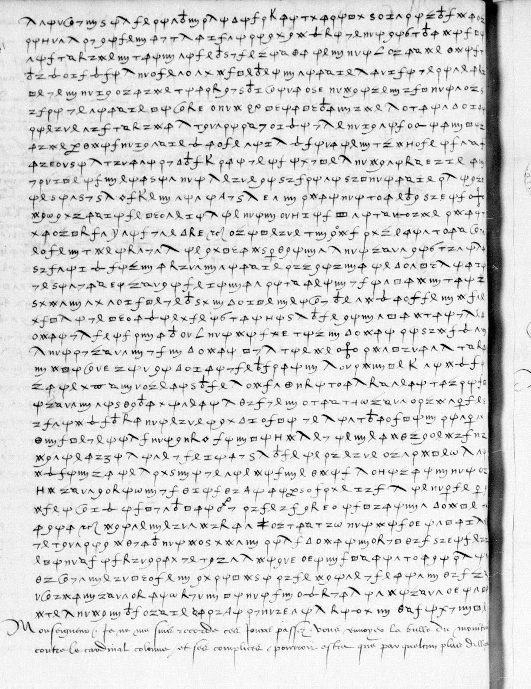

Dossier · Guerre d’Italia, XVI secolo
Roma, 1526: «il papa è fuggito», ciò che Raince metteva in cifra per Montmorency
Nel marzo 1526 Francesco I esce dalla sua prigione di Madrid. In maggio entra con papa Clemente VII, Venezia e Firenze nella lega di Cognac contro Carlo V. A Roma il segretario dell’ambasciata di Francia, Nicolas Raince, scrive al gran maestro Anne de Montmorency. Ciò che vuole nascondere lo mette in cifra: in maggio, ciò che si dice della corte dell’Imperatore; in novembre, un papa che, dopo il colpo di mano dei Colonna sul Vaticano, pensa di fuggire.
«Et que aussi en France se pouvoit dire par aucuns : le pape s’en est fuy.»
«E che anche in Francia alcuni potrebbero dire: il papa è fuggito»: Raince a Montmorency, Roma, 20 novembre 1526 (passo cifrato; «France» è una parola-segno letta in base al senso).
Cosa c’è di nuovo, cosa era già noto
Noto. Le lettere di Raince a Montmorency formano un volume della collezione Béthune; Mignet (1886), Bourrilly (1901) e Pastor ne stampano altre, glossate all’epoca o in chiaro.[3] La tavola della cifra è stata pubblicata da Satoshi Tomokiyo e rimisurata da Daniel Bourdeau, che aveva decodificato in parte la parte bassa della p. 105 e la lettera del 13 maggio («decodificato, non letto»).[2][4]
Che cosa aggiungiamo, per quanto ci risulta. (1) La prima lettura completa di due passi cifrati senza glossa: la lettera del 13 maggio 1526 (1112 parole, 97,3% sicure o probabili) e quella del 20 novembre 1526 (597 parole, 98,0%), compresa la p. 106, interamente cifrata, che nessuno aveva trattato. Entrambe sono lette secondo la regola di Daniel Bourdeau. (2) Il ritratto di un Clemente VII prostrato, un anno prima del sacco di Roma, come l’agente del re lo descriveva in segreto.
Maggio 1526: la corte dell’Imperatore vista da Roma
Il 13 maggio, nove giorni prima della firma della lega di Cognac, Raince riferisce ciò che si dice a Roma della corte di Carlo V. Dopo la liberazione del re, l’Imperatore ha sposato Isabella di Portogallo a Siviglia invece di passare in Italia; i suoi cortigiani si dilaniano:
«Si sono formate due fazioni alla corte [dell’Imperatore] dopo la partenza del re: gli Aragonesi, i Borgognoni, quelli dell’Hainaut e i Fiamminghi si sono coalizzati contro quelli di Castiglia, che accusano […] di averlo condotto a Siviglia per fargli perdere la bella occasione che aveva di passare in Italia. I Castigliani dicono al contrario che i suddetti sono dei veillacos e dei borachos.»
La cifra dice anche l’inquietudine di un interlocutore romano: il re, tornato nel suo regno, non ha mandato nessuno a visitare il papa. E denuncia gli uomini del duca di Ferrara, che starebbe «notte e giorno con gli Imperiali»: Alfonso d’Este trattava allora con entrambe le parti.
Novembre 1526: un papa che vuole fuggire
Il 20 settembre 1526 i Colonna, alleati dell’Imperatore, hanno invaso Roma e saccheggiato il Vaticano; il papa si è rifugiato in Castel Sant’Angelo e ha dovuto firmare una tregua.[5] Due mesi dopo fa venire Raince:

«… evitare di essere costretto tra breve ad abbandonare Roma e a fuggire, e ancora se Dio gli facesse la grazia di poterlo fare in sicurezza; e che il suo pontificato sarebbe stato la causa della rovina totale della sua casa […], desiderando la morte, e parlando in modo tale, sospirando così profondamente, che non c’è cuore tanto duro che non ne avrebbe provato la più grande compassione del mondo.»
Il papa accusa la Francia: se è in pericolo, è perché «du côté de delà», dalla parte francese, non si è rotto con l’Imperatore come si doveva. Il re, avverte, avrebbe ben poco guadagnato a veder rovinato «le meilleur ami qu’il eût oncques au monde», il miglior amico che abbia mai avuto al mondo; e presto in Francia si potrebbe dire: «il papa è fuggito». Raince aggiunge che si sarebbe volentieri dispensato dallo scrivere parole «si piteuses et lacrymables», così pietose e lacrimevoli, ma che il papa lo ha incaricato espressamente di farle sentire al re.
Sei mesi dopo, il 6 maggio 1527, le truppe imperiali prendono Roma; Clemente VII, assediato in Castel Sant’Angelo, finisce per fuggire a Orvieto in dicembre.[5] La lettera di novembre mostra che la fuga era presa in considerazione già nel 1526, e che la si faceva sapere al re di Francia come un rimprovero.
La cifra di Raince
- Una sostituzione omofonica di lettere: tre o quattro segni per a, e, i, o, r, u.
- Nulle (λ, «my», K, una croce con due cerchi, un’asta con due barre) per confondere.
- Parole-segno: «roy», «le pape», «con» sono nella tavola; altre, assenti dalla tavola, sono lette in base al senso (un segno per l’Imperatore, un grande delta per il duca di Ferrara, un altro per la Francia, uno per Madame, la madre del re).
Come l’abbiamo letta
- La chiave: la tavola pubblicata da Satoshi Tomokiyo, rimisurata da Daniel Bourdeau, congelata con un’impronta SHA-256 prima della lettura.
- Una convalida alla cieca: due righe cifrate della p. 34, il cui chiaro d’epoca sopravvive alla p. 17, lette senza guardare quel chiaro: 0,939 dei caratteri corretti, contro 0,535 al 99° percentile di chiavi permutate e 0,586 al massimo per finestre prese altrove.
- La lettura, segno per segno sul microfilm di Gallica, ad alta risoluzione; le 85 righe di maggio rilette una a una a confronto con la lettura parziale di Daniel Bourdeau (nessuna parola piena smentita, dodici righe completate); in novembre, le nostre due letture della parte bassa della p. 105 concordano al 95,6% delle lettere.
- Il conteggio, tramite script, secondo il computo di Daniel Bourdeau: in maggio, 1074 parole sicure, 8 probabili, 20 lette in base al senso (parole-segno), 10 irrisolte; in novembre, 572 sicure, 13 probabili, 8 in base al senso, 4 irrisolte.
Che cosa resta incerto
- Le parole-segno fuori tavola sono lette in base al senso e non sono contate come sicure; l’identificazione di ‹ℓ°› con l’Imperatore o il suo partito resta un’ipotesi forte.
- Una convalida breve: solo due righe hanno un chiaro d’epoca insieme sicuro e tenuto da parte.
- Anteriorità. Verificata il 28 ottobre e poi il 14 novembre 2026: repository di Daniel Bourdeau (obiettivo raince: letture parziali, poi la nostra lettura), Mignet, Bourrilly, Pastor, Molini, ricerca in rete. Non abbiamo trovato edizioni di questi passi.
Riferimenti
Parigi, BnF, Français 2984 (già Béthune 8509): Raince a Montmorency, Roma, 13 maggio 1526 (pp. 29–31) e 20 novembre 1526 (n. 24, pp. 105–107). Source gallica.bnf.fr / BnF. Maggio ↗ · Novembre ↗
Daniel Bourdeau, catalogo cyphersolver, n. 5, e obiettivo raince ↗ (tavola rimisurata, letture parziali, regola del 95%).
F. Mignet (1886); V.-L. Bourrilly (1901); L. von Pastor, Histoire des papes: altre lettere di Raince, non questi passi; G. Molini, Documenti di storia italiana (1836): catalogo del volume.
Satoshi Tomokiyo, Cryptiana, «French Ciphers during the Reign of Francis I». Cryptiana ↗
«Papa Clemente VII», Wikipedia (it), consultato il 14 novembre 2026. Wikipedia ↗
Trascrizione, lettura e conteggio: Brice Dudout con Claude, ottobre 2026; testi e traduzioni nella scheda «Raince 1526» della pagina Documenti, con le giustificazioni e i crediti.